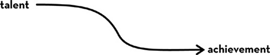
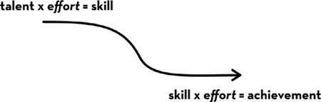

Chapter 3 Chapter 3
Chapter 3 Chapter 3Not a day goes by that I don’t read or hear the word talent. In every section of the newspaper—from the sports page to the business section, from profiles of actors and musicians in the weekend supplement, to front-page stories of rising stars in politics—allusions to talent abound. It seems that when anyone accomplishes a feat worth writing about, we rush to anoint that individual as extraordinarily “talented.”
If we overemphasize talent, we underemphasize everything else. In the extreme, it’s as if, deep down, we hold the following to be true:

For instance, I recently listened to a radio commentator draw a comparison between Hillary and Bill Clinton. He observed that both are unusually good communicators. But while her husband, Bill, is a gifted politician, Hillary has to contort herself into the role. Bill is a natural; Hillary merely a striver. The unsaid but obvious implication is that she’ll never quite be his equal.
I’ve caught myself doing it, too. When someone really, really impresses me, I might reflexively say to myself: What a genius! I should know better. I do. So what’s going on? Why does an unconscious bias toward talent persist?
A few years ago, I read a study of competitive swimmers titled “The Mundanity of Excellence.” The title of the article encapsulates its major conclusion: the most dazzling human achievements are, in fact, the aggregate of countless individual elements, each of which is, in a sense, ordinary.
Dan Chambliss, the sociologist who completed the study, observed: “Superlative performance is really a confluence of dozens of small skills or activities, each one learned or stumbled upon, which have been carefully drilled into habit and then are fitted together in a synthesized whole. There is nothing extraordinary or superhuman in any one of those actions; only the fact that they are done consistently and correctly, and all together, produce excellence.”
But mundanity is a hard sell. When finishing up his analyses, Dan shared a few chapters with a colleague. “You need to jazz it up,” his friend said. “You need to make these people more interesting. . . .”
When I called Dan to probe a few of his observations, I learned that he’d become fascinated with the idea of talent—and what we really mean by it—as a swimmer himself and, for several years afterward, as a part-time coach. As a young assistant professor, Dan decided to do an in-depth, qualitative study of swimmers. In total, Dan devoted six years to interviewing, watching, and sometimes living and traveling with swimmers and coaches at all levels—from the local swim club to an elite team made up of future Olympians.
“Talent,” he observed, “is perhaps the most pervasive lay explanation we have for athletic success.” It is as if talent were some invisible “substance behind the surface reality of performance, which finally distinguishes the best among our athletes.” And these great athletes seem blessed “with a special gift, almost a ‘thing’ inside of them, denied to the rest of us—perhaps physical, genetic, psychological, or physiological. Some have ‘it,’ and some don’t. Some are ‘natural athletes,’ and some aren’t.”
I think Dan is exactly right. If we can’t explain how an athlete, musician, or anyone else has done something jaw-droppingly amazing, we’re inclined to throw up our hands and say, “It’s a gift! Nobody can teach you that.” In other words, when we can’t easily see how experience and training got someone to a level of excellence that is so clearly beyond the norm, we default to labeling that person a “natural.”
Dan points out that the biographies of great swimmers reveal many, many factors that contribute to their ultimate success. For instance, the most accomplished swimmers almost invariably had parents who were interested in the sport and earned enough money to pay for coaching, travel to swim meets, and not the least important: access to a pool. And, crucially, there were the thousands of hours of practice in the pool over years and years—all spent refining the many individual elements whose sum create a single flawless performance.
Though it seems wrong to assume that talent is a complete explanation for dazzling performance, it’s also understandable. “It’s easy to do,” Dan explained, “especially if one’s only exposure to top athletes comes once every four years while watching the Olympics on television, or if one only sees them in performances rather than in day-to-day training.”
Another point he makes is that the minimal talent needed to succeed in swimming is lower than most of us think.
“I don’t think you mean to say that any of us could be Michael Phelps,” I said. “Do you?”
“No, of course not,” Dan replied. “To begin with, there are certain anatomical advantages that you really can’t train for.”
“And,” I continued, “wouldn’t you say that some swimmers improve more than others, even if they’re trying equally hard and getting the same coaching?”
“Yes, but the main thing is that greatness is doable. Greatness is many, many individual feats, and each of them is doable.”
Dan’s point is that if you had a time-lapse film of the hours and days and weeks and years that produced excellence, you could see what he saw: that a high level of performance is, in fact, an accretion of mundane acts. But does the incremental mastery of mundane individual components explain everything? I wondered. Is that all there is?
“Well, we all love mystery and magic,” he said. “I do, too.”
Then Dan told me about the day he got to watch Rowdy Gaines and Mark Spitz swim laps. “Spitz won seven gold medals in the ’72 Olympics and was the big thing before Michael Phelps,” he explained. “In ’84, twelve years after retirement, Spitz showed up. He’s in his mid-thirties. And he gets into the water with Rowdy Gaines, who at that time held the world record in the one hundred free. They did some fifties—in other words, two lengths of the pool, just sprints, like little races. Gaines won most of them, but by the time they were halfway through, the entire team was standing around the edge of the pool just to watch Spitz swim.”
Everyone on the team had been training with Gaines, and they knew how good he was. They knew he was favored to win Olympic gold. But because of the age gap, nobody had swum with Spitz.
One swimmer turned to Dan and said, pointing to Spitz, “My god. He’s a fish.”
I could hear the wonder in Dan’s voice. Even a student of mundanity, it seems, is easily lulled into talent explanations. I pressed him a bit. Was that sort of majestic performance something divine?
Dan told me to go read Nietzsche.
Nietzsche? The philosopher? What would a nineteenth-century German philosopher have to say that might explain Mark Spitz? As it turns out, Nietzsche, too, had thought long and hard about the same questions.
“With everything perfect,” Nietzsche wrote, “we do not ask how it came to be.” Instead, “we rejoice in the present fact as though it came out of the ground by magic.”
When I read that passage, I thought of the young swimmers watching their icon Spitz exhibit form that almost didn’t seem human.
“No one can see in the work of the artist how it has become,” Nietzsche said. “That is its advantage, for wherever one can see the act of becoming one grows somewhat cool.” In other words, we want to believe that Mark Spitz was born to swim in a way that none of us were and that none of us could. We don’t want to sit on the pool deck and watch him progress from amateur to expert. We prefer our excellence fully formed. We prefer mystery to mundanity.
But why? What’s the reason for fooling ourselves into thinking Mark Spitz didn’t earn his mastery?
“Our vanity, our self-love, promotes the cult of the genius,” Nietzsche said. “For if we think of genius as something magical, we are not obliged to compare ourselves and find ourselves lacking. . . . To call someone ‘divine’ means: ‘here there is no need to compete.’ ”
In other words, mythologizing natural talent lets us all off the hook. It lets us relax into the status quo. That’s what undoubtedly occurred in my early days of teaching when I mistakenly equated talent and achievement, and by doing so, removed effort—both my students’ and my own—from further consideration.
So what is the reality of greatness? Nietzsche came to the same conclusion Dan Chambliss did. Great things are accomplished by those “people whose thinking is active in one direction, who employ everything as material, who always zealously observe their own inner life and that of others, who perceive everywhere models and incentives, who never tire of combining together the means available to them.”
And what about talent? Nietzsche implored us to consider exemplars to be, above all else, craftsmen: “Do not talk about giftedness, inborn talents! One can name great men of all kinds who were very little gifted. They acquired greatness, became ‘geniuses’ (as we put it). . . . They all possessed that seriousness of the efficient workman which first learns to construct the parts properly before it ventures to fashion a great whole; they allowed themselves time for it, because they took more pleasure in making the little, secondary things well than in the effect of a dazzling whole.”
In my second year of graduate school, I sat down to a weekly meeting with my advisor, Marty Seligman. I was more than a little nervous. Marty has that effect on people, especially his students.
Then in his sixties, Marty had won just about every accolade psychology has to offer. His early research led to an unprecedented understanding of clinical depression. More recently, as president of the American Psychological Association, he christened the field of Positive Psychology, a discipline that applies the scientific method to questions of human flourishing.
Marty is barrel-chested and baritone-voiced. He may study happiness and well-being, but cheerful is not a word I’d use to describe him.
In the middle of whatever it was I was saying—a report on what I’d done in the past week, I suppose, or the next steps in one of our research studies—Marty interrupted. “You haven’t had a good idea in two years.”
I stared at him, openmouthed, trying to process what he’d just said. Then I blinked. Two years? I hadn’t even been in graduate school for two years!
Silence.
Then he crossed his arms, frowned, and said: “You can do all kinds of fancy statistics. You somehow get every parent in a school to return their consent form. You’ve made a few insightful observations. But you don’t have a theory. You don’t have a theory for the psychology of achievement.”
Silence.
“What’s a theory?” I finally asked, having absolutely no clue as to what he was talking about.
Silence.
“Stop reading so much and go think.”
I left his office, went into mine, and cried. At home with my husband, I cried more. I cursed Marty under my breath—and aloud as well—for being such a jerk. Why was he telling me what I was doing wrong? Why wasn’t he praising me for what I was doing right?
You don’t have a theory. . . .
Those words rattled around in my mind for days. Finally, I dried my tears, stopped my cursing, and sat down at my computer. I opened the word processor and stared at the blinking cursor, realizing I hadn’t gotten far beyond the basic observation that talent was not enough to succeed in life. I hadn’t worked out how, exactly, talent and effort and skill and achievement all fit together.
A theory is an explanation. A theory takes a blizzard of facts and observations and explains, in the most basic terms, what the heck is going on. By necessity, a theory is incomplete. It oversimplifies. But in doing so, it helps us understand.
If talent falls short of explaining achievement, what’s missing?
I have been working on a theory of the psychology of achievement since Marty scolded me for not having one. I have pages and pages of diagrams, filling more than a dozen lab notebooks. After more than a decade of thinking about it, sometimes alone, and sometimes in partnership with close colleagues, I finally published an article in which I lay down two simple equations that explain how you get from talent to achievement.
Here they are:

Talent is how quickly your skills improve when you invest effort. Achievement is what happens when you take your acquired skills and use them. Of course, your opportunities—for example, having a great coach or teacher—matter tremendously, too, and maybe more than anything about the individual. My theory doesn’t address these outside forces, nor does it include luck. It’s about the psychology of achievement, but because psychology isn’t all that matters, it’s incomplete.
Still, I think it’s useful. What this theory says is that when you consider individuals in identical circumstances, what each achieves depends on just two things, talent and effort. Talent—how fast we improve in skill—absolutely matters. But effort factors into the calculations twice, not once. Effort builds skill. At the very same time, effort makes skill productive. Let me give you a few examples.
There’s a celebrated potter named Warren MacKenzie who lives in Minnesota. Now ninety-two years old, he has been at his craft, without interruption, for nearly his entire adult life. Early on, he and his late wife, also an artist, tried a lot of different things: “You know, when you’re young, you think you can do anything, and we thought, oh, we’ll be potters, we’ll be painters, we’ll be textile designers, we’ll be jewelers, we’ll be a little of this, a little of that. We were going to be the renaissance people.”
It soon became clear that doing one thing better and better might be more satisfying than staying an amateur at many different things: “Eventually both of us gave up the drawing and painting, gave up the silk-screening, gave up the textile design, and concentrated on ceramic work, because that was where we felt our true interest lay.”
MacKenzie told me “a good potter can make forty or fifty pots in a day.” Out of these, “some of them are good and some of them are mediocre and some of them are bad.” Only a few will be worth selling, and of those, even fewer “will continue to engage the senses after daily use.”
Of course, it’s not just the number of good pots MacKenzie makes that has brought the art world to his door. It’s the beauty and form of the pots: “I’m striving to make things which are the most exciting things I can make that will fit in people’s homes.” Still, as a simplification, you might say that the number of enduringly beautiful, exquisitely useful pots MacKenzie is able to produce, in total, will be what he accomplishes as an artist. It would not satisfy him to be among the most masterful potters but only produce, say, one or two pieces in his lifetime.
MacKenzie still throws clay on the wheel every day, and with effort his skill has improved: “I think back to some of the pots we made when we first started our pottery, and they were pretty awful pots. We thought at the time they were good; they were the best we could make, but our thinking was so elemental that the pots had that quality also, and so they don’t have a richness about them which I look for in my work today.”
“The first 10,000 pots are difficult,” he has said, “and then it gets a little bit easier.”
As things got easier, and as MacKenzie improved, he produced more good pots a day:
talent x effort = skill
At the same time, the number of good pots he’s brought into the world increased:
skill x effort = achievement
With effort, MacKenzie has gotten better and better at making “the most exciting things I can make that will fit in people’s homes.” At the same time, with the same invested effort, he has become more accomplished.
“Garp was a natural storyteller.”
This is a line from John Irving’s fourth novel, The World According to Garp. Like that novel’s fictional protagonist, Irving tells a great story. He has been lauded as “the great storyteller of American literature today.” To date, he’s written more than a dozen novels, most of which have been best sellers and half of which have been made into movies. The World According to Garp won the National Book Award, and Irving’s screenplay for The Cider House Rules won an Academy Award.
But unlike Garp, Irving was not a natural. While Garp “could make things up, one right after the other, and they seemed to fit,” Irving rewrites draft after draft of his novels. Of his early attempts at writing, Irving has said, “Most of all, I rewrote everything . . . I began to take my lack of talent seriously.”
Irving recalls earning a C– in high school English. His SAT verbal score was 475 out of 800, which means almost two-thirds of the students who took the SAT did better than him. He needed to stay in high school an extra year to have enough credits to graduate. Irving recalls that his teachers thought he was both “lazy” and “stupid.”
Irving was neither lazy nor stupid. But he was severely dyslexic: “I was an underdog. . . . If my classmates could read our history assignment in an hour, I allowed myself two or three. If I couldn’t learn to spell, I would keep a list of my most frequently misspelled words.” When his own son was diagnosed with dyslexia, Irving finally understood why he, himself, had been such a poor student. Irving’s son read noticeably slower than his classmates, “with his finger following the sentence—as I read, as I still read. Unless I’ve written it, I read whatever ‘it’ is very slowly—and with my finger.”
Since reading and writing didn’t come easily, Irving learned that “to do anything really well, you have to overextend yourself. . . . In my case, I learned that I just had to pay twice as much attention. I came to appreciate that in doing something over and over again, something that was never natural becomes almost second nature. You learn that you have the capacity for that, and that it doesn’t come overnight.”
Do the precociously talented learn that lesson? Do they discover that the capacity to do something over and over again, to struggle, to have patience, can be mastered—but not overnight?
Some might. But those who struggle early may learn it better: “One reason I have confidence in writing the kind of novels I write,” Irving said, “is that I have confidence in my stamina to go over something again and again no matter how difficult it is.” After his tenth novel, Irving observed, “Rewriting is what I do best as a writer. I spend more time revising a novel or screenplay than I take to write the first draft.”
“It’s become an advantage,” Irving has observed of his inability to read and spell as fluently as others. “In writing a novel, it doesn’t hurt anybody to have to go slowly. It doesn’t hurt anyone as a writer to have to go over something again and again.”
With daily effort, Irving became one of the most masterful and prolific writers in history. With effort, he became a master, and with effort, his mastery produced stories that have touched millions of people, including me.
Grammy Award–winning musician and Oscar-nominated actor Will Smith has thought a lot about talent, effort, skill, and achievement. “I’ve never really viewed myself as particularly talented,” he once observed. “Where I excel is ridiculous, sickening work ethic.”
Accomplishment, in Will’s eyes, is very much about going the distance. Asked to explain his ascendancy to the entertainment elite, Will said:
The only thing that I see that is distinctly different about me is: I’m not afraid to die on a treadmill. I will not be outworked, period. You might have more talent than me, you might be smarter than me, you might be sexier than me. You might be all of those things. You got it on me in nine categories. But if we get on the treadmill together, there’s two things: You’re getting off first, or I’m going to die. It’s really that simple.
In 1940, researchers at Harvard University had the same idea. In a study designed to understand the “characteristics of healthy young men” in order to “help people live happier, more successful lives,” 130 sophomores were asked to run on a treadmill for up to five minutes. The treadmill was set at such a steep angle and cranked up to such a fast speed that the average man held on for only four minutes. Some lasted for only a minute and a half.
By design, the Treadmill Test was exhausting. Not just physically but mentally. By measuring and then adjusting for baseline physical fitness, the researchers designed the Treadmill Test to gauge “stamina and strength of will.” In particular, Harvard researchers knew that running hard was not just a function of aerobic capacity and muscle strength but also the extent to which “a subject is willing to push himself or has a tendency to quit before the punishment becomes too severe.”
Decades later, a psychiatrist named George Vaillant followed up on the young men in the original Treadmill Test. Then in their sixties, these men had been contacted by researchers every two years since graduating from college, and for each there was a corresponding file folder at Harvard literally bursting with questionnaires, correspondence, and notes from in-depth interviews. For instance, researchers noted for each man his income, career advancement, sick days, social activities, self-reported satisfaction with work and marriage, visits to psychiatrists, and use of mood-altering drugs like tranquilizers. All this information went into composite estimates of the men’s overall psychological adjustment in adulthood.
It turns out that run time in the Treadmill Test at age twenty was a surprisingly reliable predictor of psychological adjustment throughout adulthood. George and his team considered that staying on the treadmill was also a function of how physically fit these men were in their youth, and that this finding merely indicated that physical health predicted later psychological well-being. However, they found that adjusting for baseline physical fitness “had little effect on the correlation of running time with mental health.”
In other words, Will Smith is on to something. When it comes to how we fare in the marathon of life, effort counts tremendously.
“How long would you have stayed on the treadmill?” I asked George recently. I wanted to know because, in my eyes, George is himself a paragon of grit. Early in his career, not long after completing his residency in psychiatry, George discovered the treadmill data, along with all the other information on the men collected to that point. Like a baton, the study had been handed from one research team to another, with dwindling interest and energy. Until it got to him.
George revived the study. He reestablished contact with the men by mail and phone and, in addition, interviewed each in person, traveling to all corners of the world to do so. Now in his eighties, George has outlived most of the men in the original study. He is currently writing his fourth book on what is by now the longest continuous study of human development ever undertaken.
In answer to my question about his own treadmill perseverance, George replied, “Oh, I’m not all that persistent. When I do crossword puzzles on the airplane, I always look at the answers when I am a little bit frustrated.”
So, not very gritty when it comes to crossword puzzles.
“And when something is broken in the house, I turn it over to my wife, and she fixes it.”
“So you don’t think you’re gritty?” I asked.
“The reason why the Harvard study works is that I have been doing it constantly and persistently. It’s the one ball I’ve kept my eye on. Because I’m totally fascinated by it. There is nothing more interesting than watching people grow.”
And then, after a short pause, George recalled his days at prep school, where, as a varsity track athlete, he competed in pole vaulting. To improve, he and the other vaulters did pull-ups, which he calls “chins,” because you start by hanging off a bar and then pull yourself up to where your chin hovers just above, then you drop down again, and repeat.
“I could do more chins than anyone. And it wasn’t because I was very athletic—I wasn’t. The reason is that I did a lot of chin-ups. I practiced.”
The prolific writer and director Woody Allen, when asked about his advice for young artists, once said:
My observation was that once a person actually completed a play or a novel he was well on his way to getting it produced or published, as opposed to a vast majority of people who tell me their ambition is to write, but who strike out on the very first level and indeed never write the play or book.
Or, in Allen’s snappier formulation, “Eighty percent of success in life is showing up.”
Back in the 1980s, both George H. W. Bush and Mario Cuomo frequently repeated this bit of wisdom in speech after speech, turning the saying into something of a meme. So, while these leaders of the Republican and Democratic parties must have disagreed on a great many things, they were in complete consensus on the importance of following through on what one has started.
I told George Vaillant that, if I’d been on the Harvard research team in 1940, I would have made a suggestion. I would have allowed the young men to come back the next day, if they wanted, and try the Treadmill Test again. I suspect that some would have come back to see if they could stay on longer, whereas others would have been content with their first timed effort. Maybe some would ask the researchers whether they knew of any strategies, physical or mental, in order to last longer. And maybe these fellows would even be interested in a third try, and a fourth. . . . Then I would create a grit score based on how many times men voluntarily returned to see if they could improve.
Staying on the treadmill is one thing, and I do think it’s related to staying true to our commitments even when we’re not comfortable. But getting back on the treadmill the next day, eager to try again, is in my view even more reflective of grit. Because when you don’t come back the next day—when you permanently turn your back on a commitment—your effort plummets to zero. As a consequence, your skills stop improving, and at the same time, you stop producing anything with whatever skills you have.
The treadmill is, in fact, an appropriate metaphor. By some estimates, about 40 percent of people who buy home exercise equipment later say they ended up using it less than they’d expected. How hard we push ourselves in a given workout matters, of course, but I think the bigger impediment to progress is that sometimes we stop working out altogether. As any coach or athlete will tell you, consistency of effort over the long run is everything.
How often do people start down a path and then give up on it entirely? How many treadmills, exercise bikes, and weight sets are at this very moment gathering dust in basements across the country? How many kids go out for a sport and then quit even before the season is over? How many of us vow to knit sweaters for all of our friends but only manage half a sleeve before putting down the needles? Ditto for home vegetable gardens, compost bins, and diets. How many of us start something new, full of excitement and good intentions, and then give up—permanently—when we encounter the first real obstacle, the first long plateau in progress?
Many of us, it seems, quit what we start far too early and far too often. Even more than the effort a gritty person puts in on a single day, what matters is that they wake up the next day, and the next, ready to get on that treadmill and keep going.
If I have the math approximately right, then someone twice as talented but half as hardworking as another person might reach the same level of skill but still produce dramatically less over time. This is because as strivers are improving in skill, they are also employing that skill—to make pots, write books, direct movies, give concerts. If the quality and quantity of those pots, books, movies, and concerts are what count, then the striver who equals the person who is a natural in skill by working harder will, in the long run, accomplish more.
“The separation of talent and skill,” Will Smith points out, “is one of the greatest misunderstood concepts for people who are trying to excel, who have dreams, who want to do things. Talent you have naturally. Skill is only developed by hours and hours and hours of beating on your craft.”
I would add that skill is not the same thing as achievement, either. Without effort, your talent is nothing more than your unmet potential. Without effort, your skill is nothing more than what you could have done but didn’t. With effort, talent becomes skill and, at the very same time, effort makes skill productive.